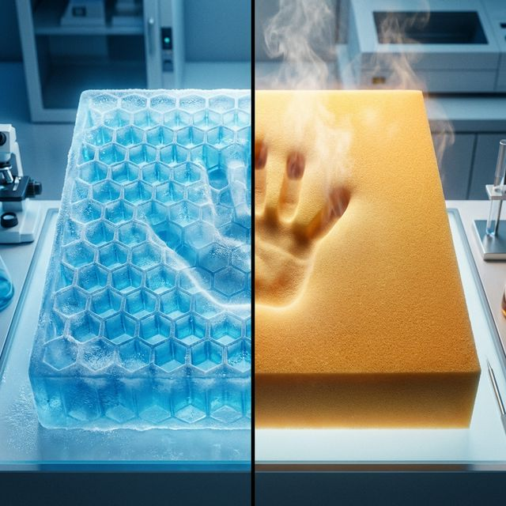

Cojín de gel vs. viscoelástico: ¿Cuál es mejor para la ciática?

1. ¿Cómo se comprime el nervio ciático al sentarnos?
El nervio ciático es el nervio más largo del cuerpo humano, naciendo en la zona lumbar baja y bajando por la parte posterior de cada muslo. Cuando nos sentamos sobre una superficie dura (o una silla cuya espuma ha colapsado), los isquiones (los huesos sobre los que nos sentamos) presionan directamente los músculos contra este nervio.
El resultado es una inflamación conocida en ergonomía clínica como "ciática de billetera" o síndrome piriforme. El objetivo terapéutico de cualquier cojín es disipar esta presión, pero el gel y la espuma lo hacen de formas muy distintas.
2. Espuma Viscoelástica (Memory Foam): El rey del contorno
Desarrollada originalmente por la NASA en los años 60, la espuma de memoria reacciona al calor y peso de tu cuerpo. Cuanto más tiempo te sientas, más se derrite alrededor de tu forma única.
- Pros: Crea un "molde" perfecto de tus glúteos y muslos. Ofrece el máximo soporte postural y reparte la presión uniformemente en áreas amplias. Es inigualable para mantener la cadera alineada.
- Contras: Es un material denso que atrapa el calor corporal. En verano o tras 4 horas seguidas, puede resultar caluroso. Además, en invierno, la habitación fría hace que la espuma esté muy dura durante los primeros 5 minutos.
3. Gel de Polímero Híper-elástico: La revolución técnica
Los cojines puros de gel (los que son gruesos y parecen un panal de abejas azul o verde) utilizan la ciencia de la flexión en lugar de la compresión.
- Pros: Su diseño en rejilla permite que el aire circule al 100%, manteniéndote fresco. Además, en lugar de aplastarse, las paredes hexagonales "colapsan" progresivamente bajo los puntos de alta presión (como el coxis), pero permanecen firmes bajo las áreas de menor presión (los muslos), dando una sensación de flotabilidad.
- Contras: Son más pesados de transportar, no "corrigen" tanto la postura hacia adelante (como hacen las cuñas viscoelásticas), y la gente muy menuda puede encontrarlos demasiado firmes.
4. La opción híbrida: Lo mejor de ambos mundos
Actualmente, los fabricantes punteros se han dado cuenta de que la mejor solución analgésica suele ser una combinación. Consiste en una base gruesa de alta densidad para proporcionar contorno y corrección pélvica, coronada por una capa (o inserción plana) de gel refrigerante.
Esta es la elección predilecta en nuestra selección sobre los cojines coxis más vendidos para usuarios que sufren de ciática crónica y teletrabajan a tiempo completo.
5. Veredicto final: ¿Qué material debes comprar?
La elección depende estrictamente de tu fisonomía y entorno:
- Compra Gel 100% (panal) si: sufres de hemorroides, vives en un clima caluroso o tu dolor aparece después de más de 6 horas de estar sentado ininterrumpidamente.
- Compra Viscoelástica o Híbridos si: tienes dolor lumbar severo, hernias discales o ciática diagnosticada, ya que su capacidad para inclinar la pelvis hacia arriba liberando el coxis es insuperable.


Cojín Ergonómico Universal Viscoelástico
- Espuma viscoelástica de alta densidad
- Diseño ergonómico para jornadas largas
- Ideal para oficina y hogar
34,90 €